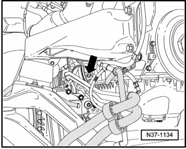
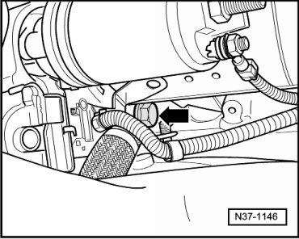
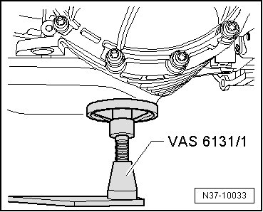
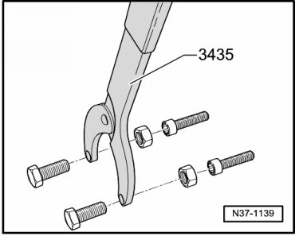
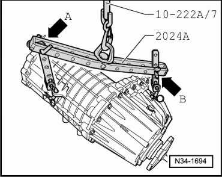
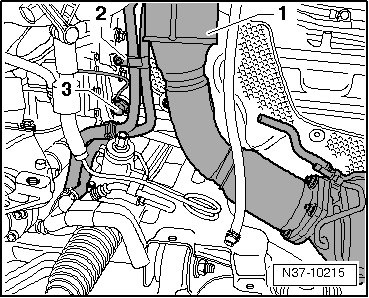
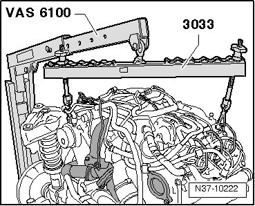

Transmission, Removing
Transmission, Removing
Brief Description
The automatic transmission 09D is removed together with the engine, front final drive and transfer case. The procedure for this is described in the engine assembly group.
For all engine variations of the Touareg, including the one that is being serviced, it is advisable to remove the lower bolts of the engine/transmission, even before the removal of the gear set. When possible, the torque converter fasteners should also be removed early on. This applies when removing, as well as when installing the transmission.
It gives two variations; separating engine and transmission from each other on the scissor lift table (VAS 6131):
First Variation
The automatic transmission 09D and the transfer case - 1 - remain fastened to each other. They can be removed from the engine together, for example, for removing and installing the torque converter.
For this, only disconnect the front driveshaft - 2 - from the transfer case. This way, when separating, the engine can be placed on one side of the scissor lift table (VAS 6131) and transmission on the other side.
Second Variation
First, the transfer case is removed from the table, then the automatic transmission. This way, repairs can be performed on the automatic transmission. For this, first the front driveshaft must be loosened on both sides, the transfer case - 1 - must be flanged off and removed from table. Then, flange off the automatic transmission from the engine and remove it from the table, if necessary.
This second variation is described here.

1 Transfer case
• Precautions and tightening specifications for servicing the transfer case and driveshafts. Differential Assembly
2 Driveshafts, front and rear
3 Rear final drive
4 Front final drive
Procedure
- For all engine variations, it is advisable to remove the lower bolts of the engine/transmission, even before the removal of the gear set.
When possible, the torque converter fasteners should also be removed early on.
- Remove engine with transmission:
• Gas engines.[1][2]Fuel Delivery and Air Induction
• Diesel engines.
With V6 and V8 Gasoline Engines

- Remove starter motor.
- Unbolt torque converter from drive plate.
With V10 TDI

- Remove the starter cable so far until the bolt can be removed. Refer to.
On these models, the torque converter fasteners and the lower engine/transmission bolts should be installed with the gear set mounted.
With V6 TDI Diesel Engine
- Remove starter far enough so that the torque converter bolts can be mounted.
Continuation for All

Make sure that at least two plates (VAS 6131/1) on the lifting table are placed under the oil pan as support for the automatic transmission.
- Remove driveshaft between transfer case and front final drive.
- To counter hold the driveshaft, the counter hold tool (T10172) can be used.
- The counter holder (3435) with two bolts up to M10 is also recommended.

or: retainer (T10172)
- Support transfer case with crane.

- Flange off the transfer case and set aside.Differential Assembly
With V6 TDI Diesel Engine

- Remove catalytic converter and particle filter - 1 - from turbocharger.
Always replace nuts for turbocharger.
- Remove coolant lines - 2 - from torque converter housing (2 bolts).
- Remove speed sensor - 3 -.
- Disconnect Automatic Transmission Fluid (ATF) lines.
- If still attached, remove left heat shield from transmission.
Later, when separating the V6 TDI engine from transmission, prevent the engine from tipping downward.
- Therefore, support the engine now with the workshop crane (VAS 6100) and lifting tackle (3033). Guide the crane to the table from the side.

- If a second crane is not available, separate the engine and transmission and then support the engine with available materials.
Before the engine and transmission are separated from each other, secure the engine from tipping over.
In the case of the V6 TDI diesel engine, this will be shown here once again.
- If a second crane is not available, separate the engine and transmission and then support the engine with available materials.
- Support transmission with crane. Refer to --> [ Transmission, Transporting ] Transmission, Transporting.
- Loosen ATF lines. Refer to --> [ ATF Cooler and Lines ] ATF Cooler and Lines.
- Remove all bolts for engine/transmission.
- Carefully separate transmission from engine.
- Make sure that the converter is also separated from drive plate with transmission.